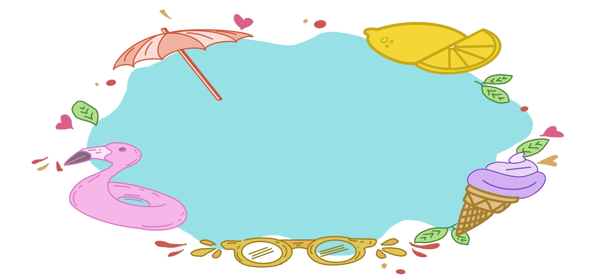

How sweet, when weary, dropping on a bank,
Turning a look around on things that be!
E’en feather-headed grasses, spindling rank,
A trembling to the breeze one loves to see;
And yellow buttercup, where many a bee
Comes buzzing to its head and bows it down;
And the great dragon-fly with gauzy wings,
In gilded coat of purple, green, or brown,
That on broad leaves of hazel basking clings,
Fond of the sunny day:–and other things
Past counting, please me while thus here I lie.
But still reflective pains are not forgot:
Summer sometime shall bless this spot, when I
Hapt in the cold dark grave, can heed it not.
